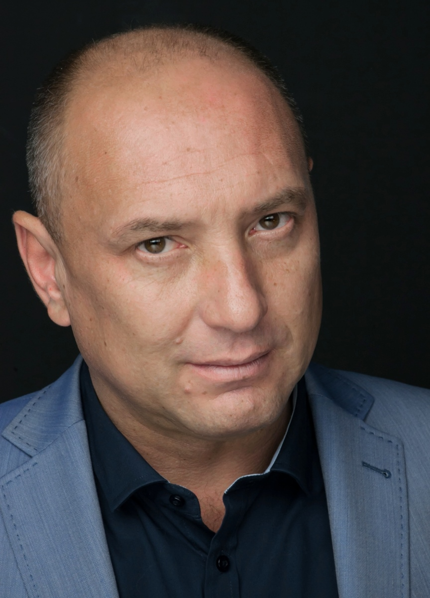

Михаил Жонин Геннадьевич
Родился 6 ноября 1974 года, в Новой Каховке.
Михаил Жонин — украинский актер, известный российскому зрителю благодаря ролям в таких
сериалах как «Дежурный врач» и «Пёс».
Будущий актер родился и вырос в небольшом провинциальном Новая Каховка в Украине в 1974 году
в семье простых рабочих. Камнем преткновением в выборе будущей профессии для мальчика
послужила театральная студия в школе, куда он сам изъявил желание записаться.

Это стало главной возможностью направить неуемную энергию подростка в нужное русло.
Гиперактивность и инициативность вскоре привела Михаила и в КВН, и на сцену «Народного
театра». Так что после школы он по поводу того, кем хочет стать не сомневался.
Михаил не стал слушать мнение родителей и после школы просто поставил их перед фактом, что
собирается поступать в Киевский национальный университет театра, кино и телевидения им.
Карпенко-Карого, и поступил.